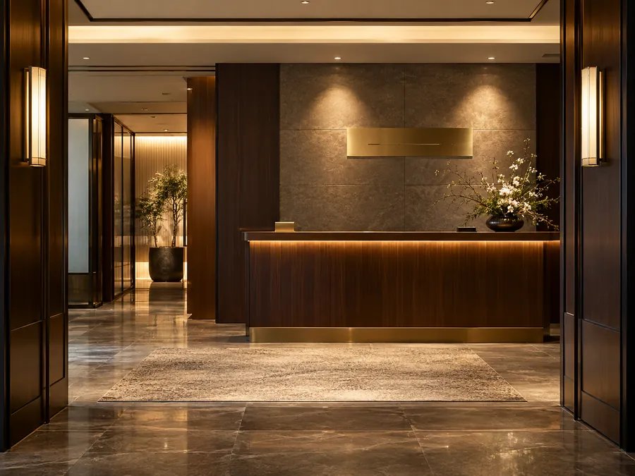

事務所案内
結の
ごあいさつ
代表プロフィール
※AIで
鳴沢 遥（なるさわ はるか） 司法書士
- 所属
- 〇〇司法書
士会 - 経歴
-
- 〇〇県出身
- 司法書
士事務所での 勤務を 経て 司法書 士試験に 合格 - 2024年 結の
葉 司法書 士事務所を 開業
- 相続の
仕事に 力を 入れている 理由 - 祖父の
家の 名義が 何代も 前の ままに なっていて 親族が 戸籍集めに 長い 時間を かけていた 姿を 見たことが きっかけです 手続きの 順番と 期限を 先に お伝えできれば ご家族の 負担は 小さく できると 考えています - 大切に
している こと - ご相談
いただいた 方が 手続きの 流れと 費用を 理解し 安心して 次の 一歩を 踏み出せる こと
「結の葉」という名前について
「結」には ご家族と
相続や
事務所概要

| 事務所名 | 結の |
|---|---|
| 代表者 | 司法書 |
| 所在地 | 〒000-0000 〇〇県〇〇市〇〇町0-0-0 |
| 電話番号 | 000-0000-0000 |
| 受付時間 | 平日 9:00〜18:00／土曜 10:00〜17:00 |
| 休業日 | 日曜・祝日・年末年始 |
| 開業 | 2024年 |
| 所属 | 〇〇司法書 |
| 主な |
相続登記・相続手続き／ |
| 相談方 |
来所・オンライン |
※架空の
はじめてのご相談は 無料です
「何から
※
お電話：000-0000-0000
受付時間 平日 9:00〜18:00／土曜 10:00〜17:00